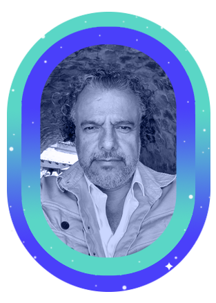

La
tripulación

Todo el trabajo y los logros alcanzados durante el viaje de este año han sido posibles gracias a las personas extraordinarias que forman parte de PODER.
Cada integrante de nuestra increíble tripulación ha aportado su energía, dedicación y talento para que nuestra misión avance hacia un universo más justo y equitativo.
Este viaje es posible gracias al sostén administrativo, financiero e institucional de nuestra nave.
Navegar nuestro universo implica capacitarnos y abordar los retos para la sostenibilidad. Entender, mejorar e incluso ajustar nuestro propio engranaje es parte de la tarea constante de fortalecernos.
Fortalecimos procedimientos financieros y administrativos, con nuevas políticas internas y herramientas de gestión más eficientes.
El equipo del área tuvo un proceso de capacitación sobre resiliencia financiera, donde adquirimos nuevas herramientas.
Desarrollamos un sistema de Monitoreo y Evaluación para medir, visualizar nuestro impacto y aprender.
Actualizamos nuestras políticas para promover una cultura de trabajo alineada a nuestros principios y valores de inclusión, diversidad y equidad.
Nos seguimos capacitando en materia de seguridad, actualizamos nuestros protocolos de intervención en crisis y consolidamos nuevos puntos focales de seguridad en el equipo.
Fortalecimos procedimientos financieros y administrativos, con nuevas políticas internas y herramientas de gestión más eficientes.
El equipo del área tuvo un proceso de capacitación sobre resiliencia financiera, donde adquirimos nuevas herramientas.
Desarrollamos un sistema de Monitoreo y Evaluación para medir, visualizar nuestro impacto y aprender.
Actualizamos nuestras políticas para promover una cultura de trabajo alineada a nuestros principios y valores de inclusión, diversidad y equidad.
Nos seguimos capacitando en materia de seguridad, actualizamos nuestros protocolos de intervención en crisis y consolidamos nuevos puntos focales de seguridad en el equipo.
Impulsamos espacios colectivos internos de reflexión y formación constante en temas de género e interseccionalidad y análisis de coyuntura.
Queremos expresar nuestro profundo agradecimiento a quienes han contribuido al diseño y creación de este informe. Su creatividad y esfuerzo han permitido que "Descubriendo Constelaciones de PODER" se convierta en una realidad estelar.
Coordinación: Paulina Souza y Claudia López.
Concepto creativo: Paulina Souza.
Diseño gráfico: Adrián Sánchez y Paulina Souza.
Programación web: Marisol Carillo.
Redacción y edición: Claudia López, Elena Arengo, Fernanda Hopenhaym y Paulina Souza.